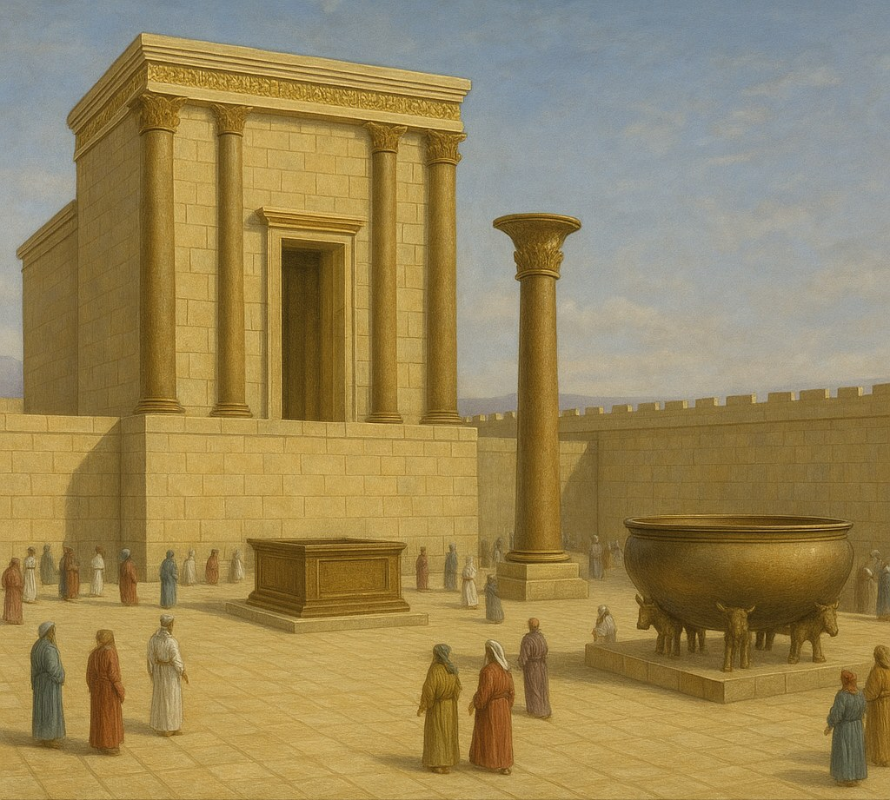
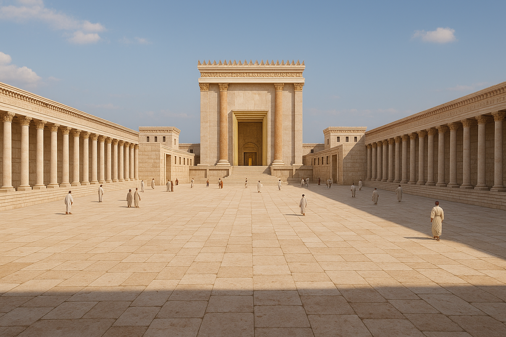
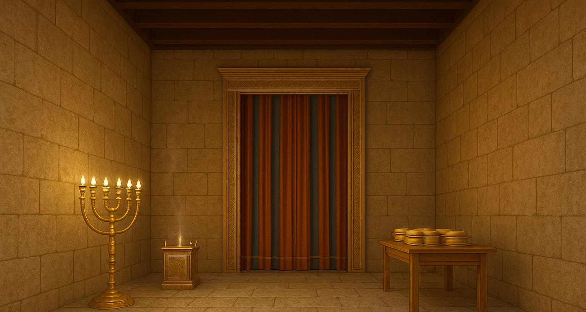
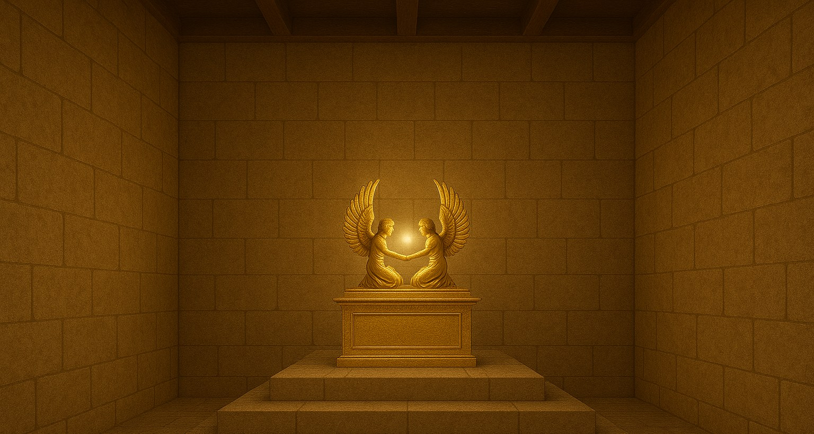
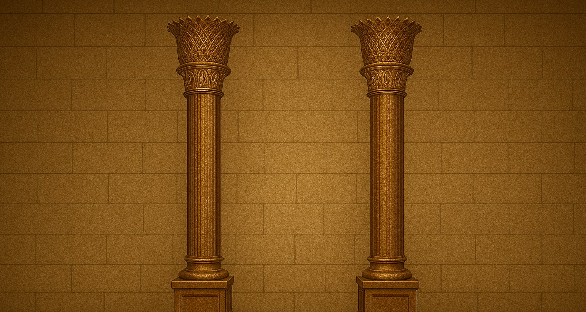
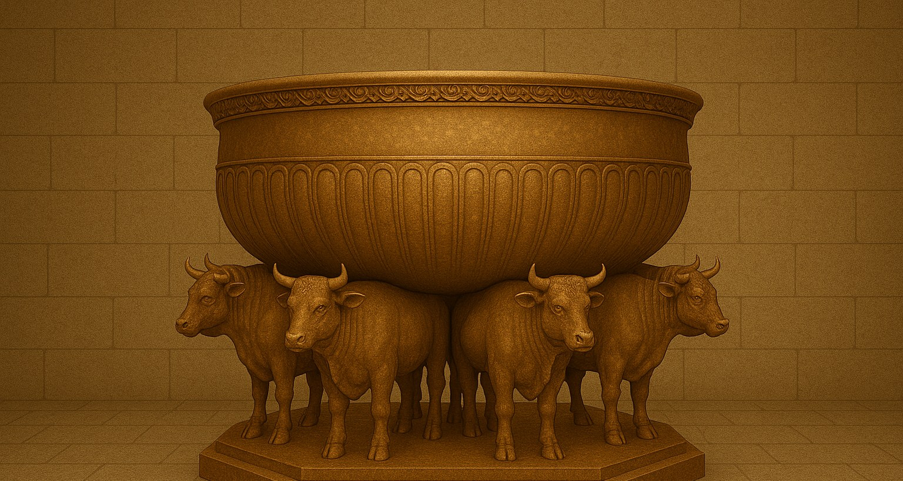
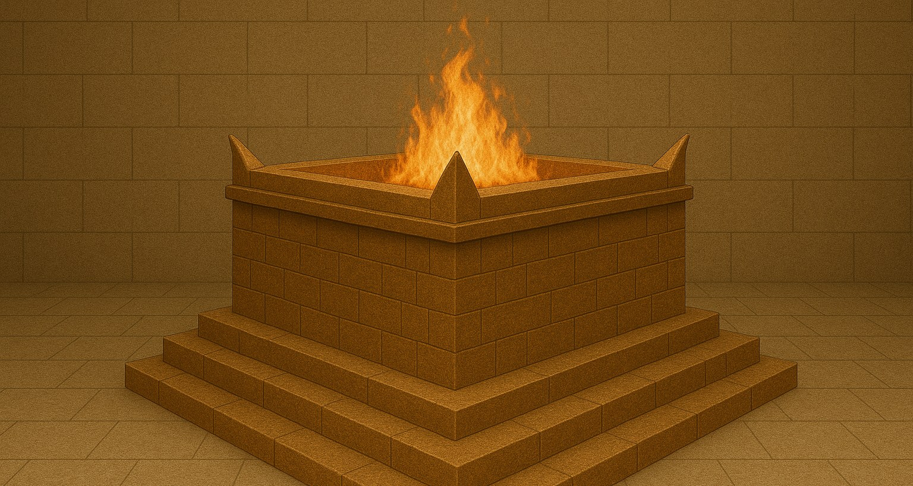
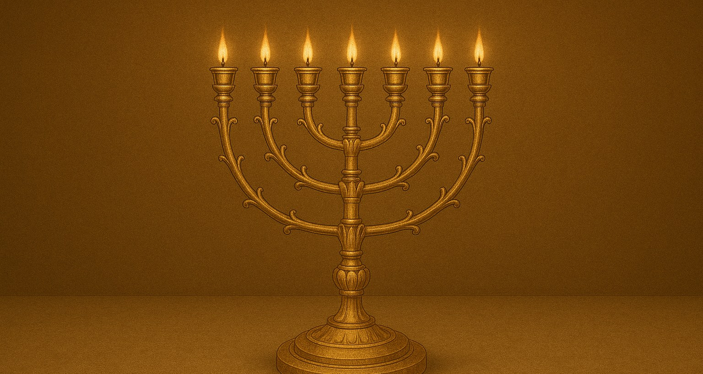
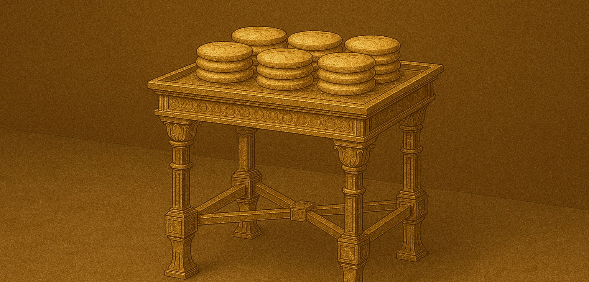
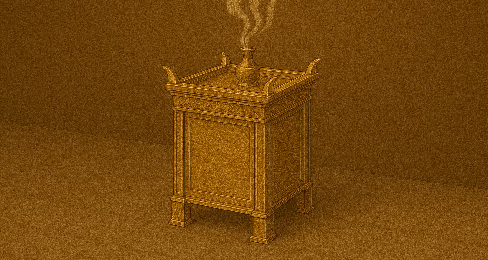

El glorioso templo del rey Salomón
El Templo de Salomón, construido alrededor del año 966 a. C., representó el punto culminante de la gloria de Israel. Durante siete años, el rey Salomón dirigió la construcción de esta maravilla arquitectónica que se convertiría en el centro del culto israelita.
Con dimensiones de aproximadamente 27 metros de largo, 9 metros de ancho y 13.5 metros de alto, el templo estaba recubierto de oro puro en su interior, reflejando la gloria divina y la opulencia del reino.
Más allá de su belleza arquitectónica, cada elemento del templo tenía un significado espiritual profundo, prefigurando aspectos del plan divino que se revelarían completamente siglos después.
Ver modelo 3D
Estructura y componentes
Nueve elementos del templo, su función arquitectónica y el significado espiritual que prefiguran.

El atrio
Descripción
El área exterior del templo donde se reunía el pueblo para la adoración. Aquí se encontraba el gran altar de bronce donde se ofrecían los sacrificios diarios. Rodeado por muros de piedra, el atrio era un espacio amplio que podía albergar a miles de fieles durante las grandes festividades.
Simbología
Representa el mundo y la entrada al reino de Dios. Simboliza el primer paso en el acercamiento a la presencia divina. El atrio prefigura la vida terrenal y el inicio del camino espiritual, donde el creyente comienza a separarse del mundo para acercarse a Dios.

El Lugar Santo (Hekal)
Descripción
La primera cámara interior del templo, donde solo los sacerdotes podían entrar. Contenía el candelabro de oro (menorá), la mesa para el pan de la proposición y el altar del incienso. Sus paredes estaban recubiertas de oro puro y decoradas con querubines, palmeras y flores.
Simbología
Representa el camino de santificación y el servicio a Dios. La menorá simboliza la luz divina y el Espíritu Santo, el pan la provisión de Dios y la comunión con Él, y el incienso las oraciones que ascienden como aroma agradable. Prefigura la vida espiritual del creyente bajo la guía del Espíritu.

El Lugar Santísimo (Debir)
Descripción
La cámara más interior y sagrada del templo, separada por un velo. Aquí se guardaba el Arca de la Alianza con los querubines de oro. Solo el sumo sacerdote podía entrar una vez al año en el día de la expiación. Era un cubo perfecto, simbolizando la perfección divina.
Simbología
Representa la morada celestial de Dios, la presencia divina inmediata. Simboliza la comunión perfecta con Dios y el cielo mismo. El velo rasgado en la crucifixión de Cristo representa el acceso directo a Dios que ahora tienen los creyentes, sin necesidad de intermediarios humanos.

Columnas Jaquín y Boaz
Descripción
Dos grandes columnas de bronce que flanqueaban la entrada del templo. Jaquín (significa "Él establecerá") estaba a la derecha, y Boaz (significa "En Él hay fortaleza") a la izquierda. Medían aproximadamente 8 metros de altura y estaban coronadas con capiteles elaborados decorados con lirios y granadas.
Simbología
Representan la estabilidad y la fuerza del reino de Dios. Sus nombres proclaman verdades fundamentales: Dios establece su obra (Jaquín) y en Él está la fuerza para sostenerla (Boaz). Simbolizan los pilares de la fe: la promesa de Dios y su poder para cumplirla.

El Mar de Bronce
Descripción
Una enorme fuente circular de bronce sostenida por doce bueyes, que contenía agua para las abluciones de los sacerdotes antes de realizar sus servicios. Tenía aproximadamente 4.5 metros de diámetro y 2.25 metros de altura, con capacidad para miles de litros de agua.
Simbología
Simboliza la purificación necesaria para acercarse a Dios. Representa el lavamiento de la regeneración y la limpieza del pecado. Los doce bueyes representan a las doce tribus de Israel sosteniendo la obra de purificación. Prefigura el bautismo y la purificación por la Palabra de Dios.

Altar de los Holocaustos
Descripción
Una gran estructura de bronce situada en el atrio donde se ofrecían los sacrificios diarios de animales por el pecado del pueblo. Medía aproximadamente 5 metros cuadrados y 3 metros de altura, con cuatro cuernos en sus esquinas y una rampa para acceder a su parte superior.
Simbología
Representa la necesidad de expiación por el pecado mediante el sacrificio. Prefigura el sacrificio definitivo de Cristo como el Cordero de Dios que quita el pecado del mundo. El fuego perpetuo que ardía en él simboliza la justicia divina que consume el pecado pero acepta el sacrificio sustitutorio.

El Candelabro de Oro (Menorá)
Descripción
Un candelabro de oro puro con siete brazos que iluminaba continuamente el Lugar Santo, mantenido encendido por los sacerdotes. Estaba elaborado a partir de un solo bloque de oro, con decoraciones de flores de almendro, capullos y flores abiertas en cada brazo.
Simbología
Simboliza la luz divina y la iluminación espiritual. Representa a Cristo como la luz del mundo y al Espíritu Santo con sus siete manifestaciones. Los siete brazos pueden representar la perfección divina, los días de la creación, o las siete iglesias del Apocalipsis.

Mesa para el Pan de la Proposición
Descripción
Una mesa de madera recubierta de oro en el Lugar Santo donde se colocaban doce panes que se renovaban cada semana. Los panes retirados eran consumidos por los sacerdotes en el lugar santo. La mesa estaba adornada con una moldura de oro y disponía de diversos utensilios también de oro puro.
Simbología
Representa la provisión continua de Dios y la comunión con Él. Simboliza a Cristo como el Pan de Vida y el sustento espiritual. Los doce panes representan a las doce tribus de Israel en comunión perpetua con Dios, o a los doce apóstoles llevando el evangelio al mundo.

Altar del Incienso
Descripción
Un pequeño altar de madera recubierto de oro ubicado frente al velo en el Lugar Santo, donde se quemaba incienso aromático mañana y tarde. Tenía cuatro cuernos en sus esquinas y anillos de oro a través de los cuales se insertaban varas para transportarlo.
Simbología
Simboliza la oración y la intercesión que asciende a Dios como olor fragante. Representa la mediación de Cristo y las oraciones de los santos. Su posición frente al velo indica que la oración es el medio de acercarse a la presencia divina, y su cercanía al Lugar Santísimo muestra la intimidad de la oración con Dios.